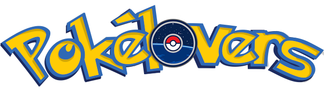

- 
- Inicio
- Novato
- Entrenador
¡¡Bienvenido a PokéLovers, nuestra Guía Pokémon, queremos saber si eres un Jugador Novato o si ya eres un Entrenador Pokémon, escoge una categoría!!

Son criaturas diversas, que las puedes encontrar en un medio salvaje o junto a los seres humanos.
Las personas que atrapan a los Pokémon (denominados “Entrenadores”) los crían y los cuidan.
En el recorrido los Pokémon crecen
y tienen más experiencia, algunos llegan a evolucionar y ser más fuertes.
Existen 151 en la región de Kanto ¡te invitamos a conocerlos con nuestra guía!

La Pokédex es un artefacto que recolecta información sobre los Pokémon,
se identifican con una imagen y su número identificador. Cuando consigues a uno puedes consultar la Pokédex seleccionando la imagen del Pokémon para conocer toda
su información,
sus tipos, ataques, fortalezas, peso, altura, etc...
Es un instrumento indispensable que entrega información detallada de cada uno de ellos.
Los tipos son elementales, simplemente tipos, son atributos asociados a los Pokémon y los ataques que les dan ventajas o desventajas sobre otros.
En la Región de Kanto encontramos 16 tipos en total.
Cada Pokémon puede tener uno
o dos tipos.
Cuando solo tiene uno, se les llama Pokémon de tipo puro, cuando tiene dos el primero se le llama tipo primario y al otro tipo secundario.
Los ataques, por otro lado, solo pueden tener un tipo.